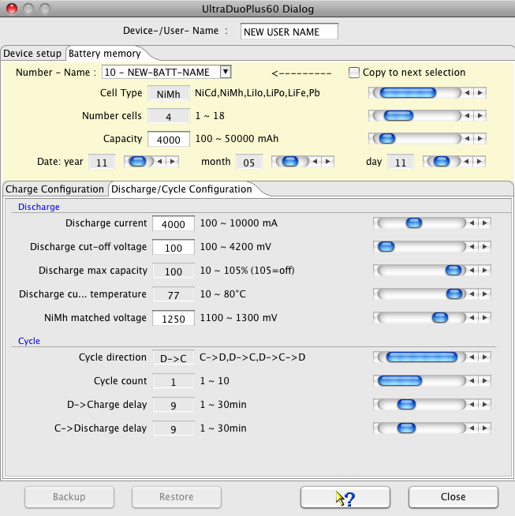
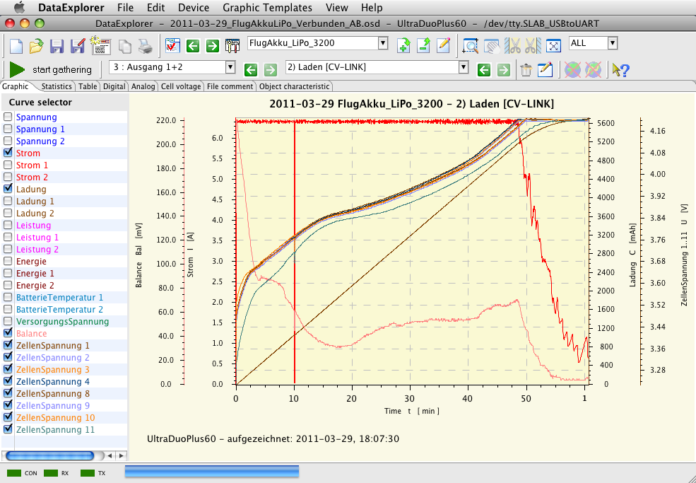

With the Ultra Duo Plus device dialog you are able to configure device identification name, button sound, etc.. The main configuration tasks are the naming from battery memories and its battery type, capacity and charge, discharge and cycle parameter.
If the serial communication port is selected using the device selection dialog, the port will be automatically opened while opening the dialog and some configuration data will be gathered from the device. To select the battery memories the drop down gets used. The adjustment of the parameter values can be done by using the slider on right hand side or when value field has white background by typing.
Hint : It is important to specify an device identifier name. Since this name is used as identifier for an data cache. The data cache gets created during first opening of the configuration dialog. Therefore the first open takes a few seconds longer than afterwards. If the cache is filled and in sync with the device data can be seen by activating the backup/restore buttons.
The following pictures displays charge, discharge and cycle parameters for a NiMh sample battery.


The following pictures displays charge, discharge and cycle parameters for a LiPo sample battery.


Hint : Only parameters gets displayed for configuration purpose which has an relevance for the selected cell type. The configuration of step charge parameters are actually not possible and is part of future release.
To start data capturing simply push the "start gathering" button. Switching between charge, discharge and other curve types is enabled automatically by values received from the device. While a new curve gets created the graphical visualization switches to this data set at the certain outlet data channel. The picture below showing a graph of a linked charged LiPo battery with 8 cells. Only curves gets dispalyed which contain data. Therefore there is a skip in CellVoltage numbers between 4 and 8. This relates to the balancer outlets where the batteries are connected.

If the device is inactive for a certain time frame the serial communication port gets closed.